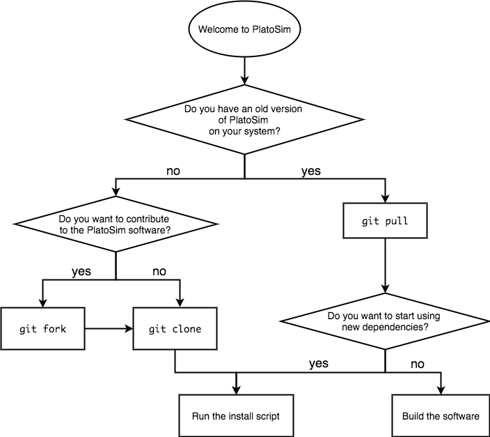
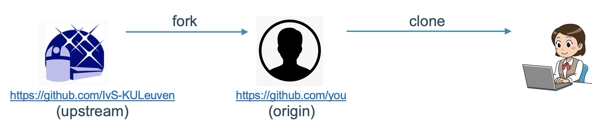
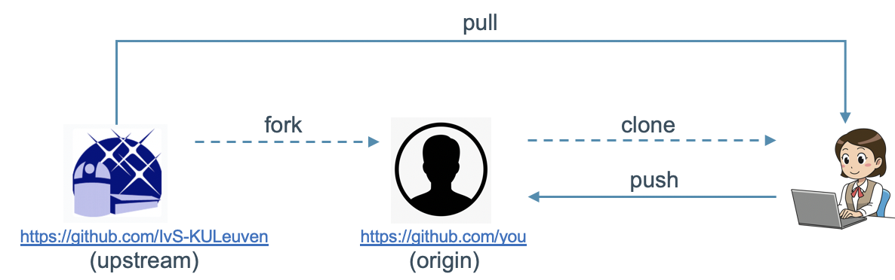
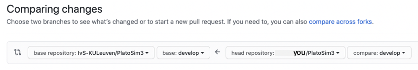

For Developers (from Source)¶
The scheme below shows an overview of the procedure to download, update, and build the PlatoSim software on your system yourself. This scheme is valid for developers who may want to contribute to the code at some point. Also the procedure to make your own modifications to the code available for others is described.
{kind=link}

Overview of procedure to download, update, and build PlatoSim
Prerequisites: needed to download and update PlatoSim.
Forking & Cloning the Repository: for first-time installation on your local machine.
Dependencies: required for running PlatoSim.
Building the Code: related to the C++ code.
Remote Repositories: to configure your GitHub setup.
Update Procedure: to get the latest version of the code (from upstream).
Contributing to the Code: by transfering your local changes to the upstream repo.
Branching Strategy: which is used in PlatoSim.
Python Packages: to install if running PlatoSim with Python.
Prerequisites¶
Git
The PlatoSim code is under version control in GitHub. To be able to get the latest version of the code on your local machine and to share possible contributions with other people in the project, you need to install Git on your computer. Installation instructions can be found in the Git reference documentation.
GitHub
The PlatoSim code is located in a private repository in GitHub. To be able to access it, we have to grant you access explicitly. Please, send your GitHub username to the development team and you will be granted read access to the repository. You will then get an invitation by email to join.
If you have not done so already, you can make an account on GitHub for free.
{kind=link}
Operating System
PlatoSim3 has been tested on recent Mac OS X and recent Linux (Fedora, Ubuntu, Debian) systems. We cannot support Windows systems at the moment, so we advise Windows users to install a Virtual Machine (VM), and run the PLATO Simulator inside the VM. Alternatively, if you’re using Windows 10, you can use Windows Subsystems for Linux (WSL) instead.
Installed Software Packages
To be able to install the dependencies and build the code, the following software must be installed on your computer:
CMake: cross-platform open-source build system to control the software compilation process (using simple platform and compiler independent configuration files)
BLAS and LAPACK. Without these, the simulator will likely be slower. These libraries come pre-installed on Mac OS X (so Mac users do not have to do anything). Many Linux distributions also standardly have these libraries installed or offer a package manager to easily install them.
Want to change the System Default Compiler?
If you want to use a different compiler than the system default to build the code, you have to export two additional environment variables, CCX and CC, as follows:
export CXX=g++-5
export CC=gcc-5
where you may want to adapt the right-hand side of these two lines to the compiler (version) of your choice.
Forking & Cloning¶
The PlatoSim3 repository can be found on the IvS-KULeuven GitHub pages. This repository is referred to as upstream. This section describes the process shown in the diagram below.
{kind=link}

Fork
To be able to not only use the code but also to contribute to it, you have to fork this repository. To do this, you have to go to the upstream GitHub page, shown in the figure below. Just press the Fork button at the top right (encircled in red in the screenshot above) and follow the instructions. Your personal copy of the PlatoSim repository will then show up on your personal GitHub pages. This copy is referred to as origin.

Clone
From there you can clone it to a designated directory on your local machine, with the following command (mind the dot at the end of the command!):
git clone https://github.com/<GitHub-username>/PlatoSim3.git .
It is possible that you will be asked for a usename and password. In that case, follow the next section Credentials.
After you have downloaded the PlatoSim3 code, you first have to install a few packages (so-called dependencies) before you can actually build and run the PlatoSim. How to do this, is described here.
Note that it is also possible to clone the repository directly onto your local machine, without forking it first. You will be able to update the software but not to contribute to it. We therefore strongly discourage this approach. If you only want to use PlatoSim (without changing the code), you may want to follow the user installation procedure instead.
Credentials
When cloning the repository to your local machine your GitHub username and personal acces tokens will be needed. If you want your machine to remember these in the future, write the following command:
git config credential.helper store
PlatoSim can then be cloned to your local machine using the command:
git clone https://"<USERNAME>:<ACCES_TOKEN>"@github.com/<your-GitHub-username>/PlatoSim3.git .
Dependencies¶
PlatoSim relies on a number software packages, which are all included in the PlatoSim3 distribution for your convenience. Everything concerning the dependencies can be found in the /dependencies directory. The /dependency/Downloads sub-directory contains the tarball or zipball file of all required packages. In the /installscripts sub-directory you can find Python scripts that help you to unzip or untar these files into the /dependency/Installs directory.
You can install all the required dependencies and build the code in one go by typing (also in the directory in which PlatoSim3 was downloaded):
./install.sh
Running this script will create the platosim executable needed to simulations from bash.
Attention
If problems would arise when executing this command, we recommend to install the dependencies one-by-one to pinpoint the problem. You can do this for one dependency at a time, like this (in the directory in which PlatoSim3 was downloaded):
python ./dependencies/installscripts/install_hdf5.py
python ./dependencies/installscripts/install_yaml.py
python ./dependencies/installscripts/install_armadillo.py
python ./dependencies/installscripts/install_fftw.py
python ./dependencies/installscripts/install_faddeeva.py
python ./dependencies/installscripts/install_zeromq.py
Still experiencing problems?
If you are still experiencing problems with the installation above, please raise an issue! It’s convenient if you can send us the full error log, which you can get hold of as follows:
./install.sh > output.txt 2> errors.txt
Building the Code¶
Software Changes
In case of code changes (after retrieving the latest version from GitHub or after introducing changes to the code yourself) or in case you have updated the PlatoSim3 code but the dependencies remain unchanged, you only have to re-build the software but not resolve the dependencies again. This saves you a tremendous amount of time. From the folder /build type:
cmake ..
make -j 4
Updated Dependencies
At some stage, we will want to update (some of) the dependencies. You will be notified by the developer team in case this happens. You will then have to:
Clear the
/dependencies/InstallsdirectoryRun the install script again (see Denpendencies)
Switching between Branches
As you can read here, we don’t just use the master branch. If you switch to another branch and want to run simulations with the current branch, you will have to re-build the software.
Remote Repositories¶
To be able to pull the latest version of the upstream software into your local copy (we’ll come back to this), we advise you to add upstream to your list of remote repositories. To check your list of remote repositories, execute the following command in the the installation folder (or one of its sub-folders):
git remote -v
This should give output, similar to this:
origin https://github.com/<your GitHub username>/PlatoSim3.git (fetch)
origin https://github.com/<your GitHub username>/PlatoSim3.git (push)
upstream https://github.com/IvS-KULeuven/PlatoSim3.git (fetch)
upstream https://github;.com/IvS-KULeuven/PlatoSim3.git (push)
If there’s no sign of the upstream (the last two lines), you can add it with the following command:
git remote add upstream https://github.com/IvS-KULeuven/PlatoSim3.git
In case you pointed upstream to the wrong location (i.e. you used the command from above with the wrong link), you can undo this by executing the following command in the the installation folder (or one of its sub-folders):
git remote rm upstream
Update Procedure¶
In the course of the development process, the code in the upstream repository will be updated. The develop branch will always contain the latest version of the code, whereas the master branch is (supposed to be) stable and well-tested. The workflow is shown schematically in the figure below.
{kind=link}

To get the latest version on your local machine, execute the following command for the develop and master branch, respectively:
git pull upstream/develop
git pull upstream/master
Note that this will only work smoothly if you did not change any of the PlatoSim3 files or added files to the PlatoSim3 folders. The only exceptions are the /inputfiles and the /build folder, where you can add files.
Please note that you have to re-build the code each time you fetch software changes. How to do this is explained here.
Contribute to the Code¶
The workflow to contribute to PlatoSim is shown schematically in the figure below. We assume you already went through the procedure to use the code. Do not forget to bring you local repository in line with the upstream.

Pushing your Changes
If you have made local changes to some files that are already under version control or you have added new files, and you want to transfer these changes to the origin repository, you must first stage these files and then commit them.
Staging a file can be done with the command:
git add <relative/path/to/file>
To inspect the status of the files in your local repository, execute the following command:
git status
To commit all staged files, execute the following command:
git commit -m "<commit-message>"
We advise you not to squeeze to much into one commit and to write clear commit messages. Before pushing your commit(s) you shall always fetch the upstream and merge potential changes (and perhaps resolve merge conflicts) before pushing your changes to your local GitHub account. This can be done using:
git fetch upstream
git merge upstream/develop
You can now transfer the committed changes to the origin repository with the command:
git push origin develop
To further transfer these changes to the upstream repository, you must open a pull request (see below). Alternatively, you can use a Graphical Git Clients to perform the steps described above. An overview of the possibilities can be found here.
Pull Requests
Now that you have pushed your changes to the origin repository, you want your changes to be incorporated into the upstream repository, so other people can benefit from your efforts. To do this, go to the upstream GitHub page and just select the Pull requests tab at the top (encircled in red in the screenshot below).

From there you can open a new pull request by pressing the green New pull request button. Select compare across forks, and then you can compare the upstream repository (on the left-hand side in the screenshot below) and the origin repository (on the right-hand side in the screenshot below). You will get an overview of the differences between the two..
{kind=link}

To confirm you want to open a pull request, press the green Create pull request button and fill out the required information. The development team will review the changes, and accept or reject the request.
Branching Strategy¶
We have adopted the branching strategy of Vincent Driessen, which means that the following two branches will be used permanently:
The master branch, with the stable (i.e. tested) code, which is considered safe to use
The develop branch, with the latest development, which might be (highly) experimental at times (use at your own risk).
Branches
To switch to a specific branch, use the command:
git checkout <branch-name>
To grab all branches and get an overview, use the following commands:
git fetch
git branch
The first command pulls all remote branches (not only the one you are currently working on) and the second command gives you an overview of all branches you have on your system.
Release Candidates and Releases
Release candidates and releases correspond to tagged versions of the master branch. To start using a specific release or release candidate, you have to check out the version of the master branch with a specific tag to a new branch, like this:
git checkout -b <new-branch-name> <tag-name>
We will send around the tag name for new release candidates and releases once they become available. To get an overview of the available tags, use
git tag -l
Switching between Branches
If you switch to another branch and want to run simulations with the current branch, you will have to re-build the software, as described in Building the Code.
Python Packages¶
To be able to run the PlatoSim and inspect the output using our build-in Python interface, a few Python libraries are needed. We advise you to install Anaconda and use this as your Python environment manger, as this already has most of the required packages installed. It comes with a GUI, called Spyder, from which you can run your Python scripts.
In the following Poetry will be used to handle the package managing (which is far better than conda) as it manage your project installation easily over multiple platforms in a deterministic way. This has a clear advantage when you want to install an exact copy of your PlatoSim setup on a different machine.
Create and activate a Conda environment
Frist install Conda (or Miniconda) and then create a new environment:
conda create -n platosim python=<python-version>
Supported Python versions are 3.8 and 3.9. To avoid conflict between dependencies, we recommend to create a new conda environment (rather than trying to update your existing one) when switching to a different Python version. This means you (as a developer) will have to re-install all Python packages (see below), but it will on the other hand save you a lot of trouble.
Now activate your new conda environment:
conda activate platosim
Install Python packages with Poetry
If not done so, first install Poetry:
curl -sSL https://install.python-poetry.org | python -
The default installation location of Poetry is $HOME/.local/bin/poetry. You can find more information on how to change this location in Poetry’s documentation, however, since Poetry is a small package we keep the default location here.
From the base of the PlatoSim repository, simply install the Python packages with:
poetry install
Poetry will by default install the minimal package distribution of PlatoSim, which is sufficient for running the Jupyter noteboook tutorials and to use most PlatoSim’s Python modules to make your own scripts. Additionally you can add the following flags:
--with docs: install packages needed to modify this (Sphinx) documentation--with platonium: install packages needed for the PlatoSim’s toolkit: PLATOnium--with platonium --with pipeline: full suite to run the end-to-end post-processing pipeline
You should now have all the required Python packages (including the PlatoSim package) installed into your Conda environment. To verify that this type:
conda list
Always remember to activate your Conda environment before using PlatoSim’s Python interface.
Updating Python Packages
If the Python dependencies has been updated, with your Conda environment activated, use the following command to update these:
poetry update
Running the validation suite
As a good practice software building, PlatoSim3 has an automated test framework, a test harnesses, consisting of a collection of modules and test data configured to test the software unit. Hence, the test harnesses is a first sanity check post your installation.
In order to be able to run the test harnesses, you must first build the code and export the required environment variables, as explained above. Simply run the cammand:
python tests/validations/scripts/run.py